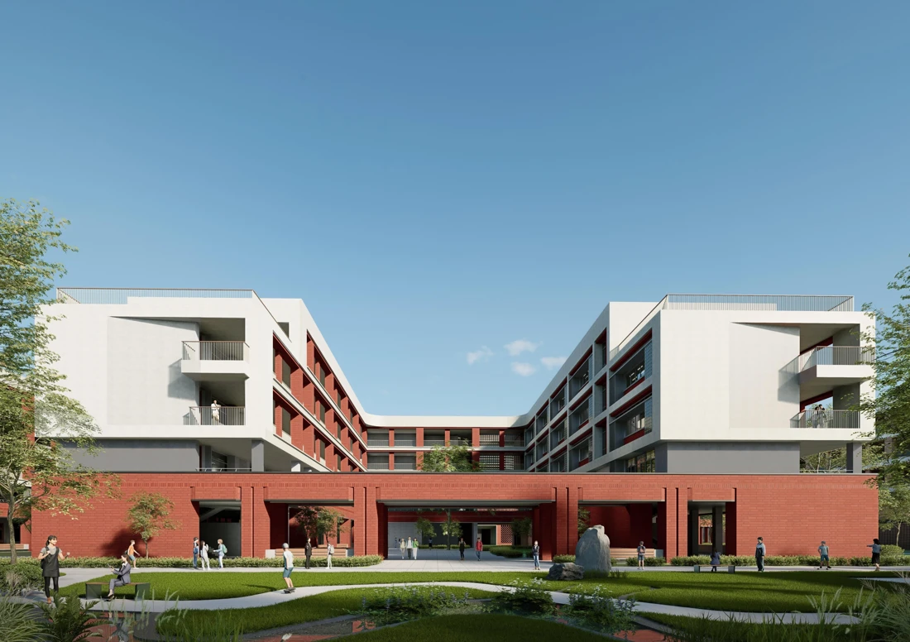

SELECTED PROJECT / 01

ARCHITECTURAL DESIGN JIANG XIANLONG / 2023—2026
以建筑设计为基础，
在真实项目中推敲空间与表达。
也用工具改进设计工作流。
ARCHITECTURE / 11 PROJECTS
产业园、教育与研发建筑。
从场地、组织到建筑表达。
TOOLS / 05 PRACTICES
从实际工作中的重复问题出发，
尝试把方法做成可使用的工具。
ABOUT / 简介
建筑学五年制本科背景，助理工程师。现任职于深圳市建筑设计研究总院有限公司合肥分院方案所，具备近 3 年建筑方案设计、单体深化、全流程会审报规与多专业协同经验。同时通过 AI 辅助开发，探索图像协作、版本管理与设计工作流程工具化。